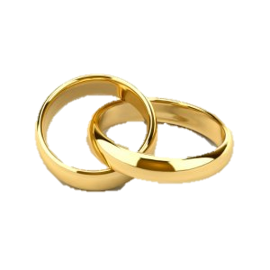

?מה זה בכלל קידושין
אתר השדכנית הינו פרויקט חדשני המאפשר
ליהודים מכל העולם למצוא את השידוך המתאים
להם מתוך מאגר גדול במיוחד של מועמדים. אל
השדכנית נרשמים מועמדים ומועמדות מכל חלקי
הציבור החרדי ומכלל הקהילות בארץ ובעולם:
בוגרי ישיבות ידועות, סמינרים בולטים ועוד. לכאן
מגיעים הרבה יותר משתדכים,
והסיכוי שלך למצוא שידוך גדול יותר!
|
|

|
!מקסימום דיסקרטיות
אנו מאמינים כי הברכה שורה בדבר הסמוי מן העין, ושידוך צריך להיעשות בצורה המכובדת ביותר בהתאם לגדרי ההלכה.
הפרטיות שלך חשובה לנו יותר מכל
, ולכן אין לאף גולש גישה אל נתוניך האישיים:
לאורך כל התהליך
רק השדכנית יכולה לראות את שמך ותמונתך, בהתחייבות
.
|